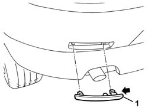

7055B28 REFLECTOR (one), left or right on rear bumper - R.R.
- Path
- Procedures > 70 FITTINGS > 7055 MOULDING AND PROTECTION > 7055B exterior protections > 7055B28 REFLECTOR (one), left or right on rear bumper - R.R.
- Kind
- repair procedure (removal / refitting; the operation number is the code)
- Applies to
- all engines; all production periods
- Interactive page
- https://sloeber94.github.io/elrnDB-a147/en/#/3025908
Applies to: all engines; all production periods
 Removing
Removing
 Refitting
Refitting1. Release the reflector from the retainers. Move in the arrowed direction

Applies to: all engines; all production periods
Refitting
RemovingCheck that the reflector is undamaged.
Fit the reflector and do up the retainers.